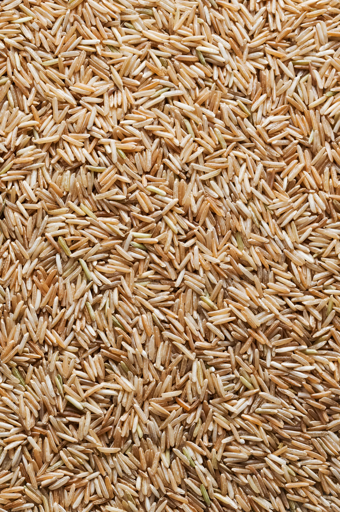

Quick Beans and Rice

A high protein meal in less than 15 minutes.
Beans and rice together make a complete protein.
50 grams of that protein makes this a great recipe for muscle repair.
Ingredients
- 1 can Beans
- 1 cup Instant Rice
- 1 cup water
- 1 tsp Brown Sugar
- Dash of Cumin
- Dash of Corriander
- Dash of Cayenne
Steps
- Bring a cup of water to boil.
- Add a cup of instant rice to water. Let rice cook until soft and water is absorbed.
- Season with brown sugar, cumin, corriander, and cayenne.